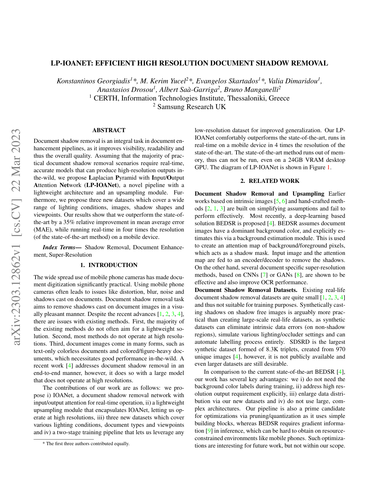
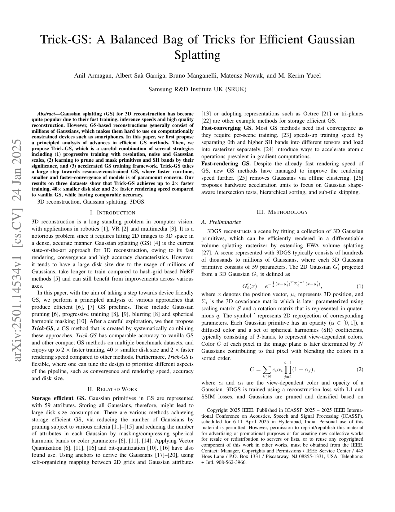
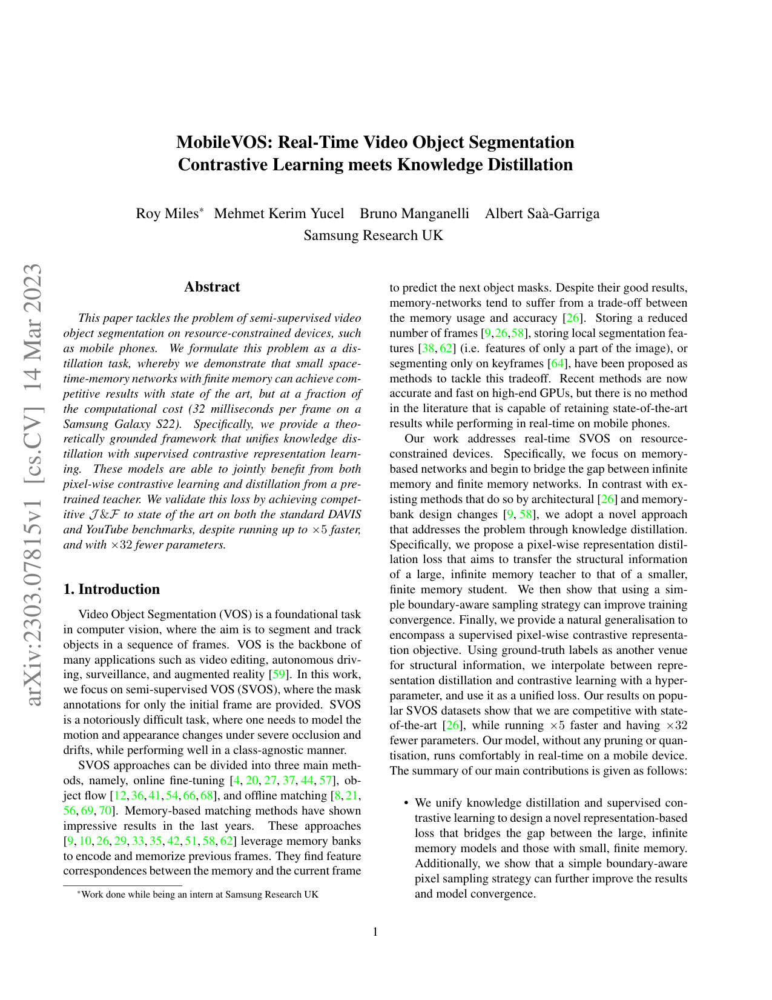

Research Pillars
Core areas of technical expertise
Computational Photography
Intelligent restoration and enhancement of visual content for mobile devices.
Shadow Removal: LP-IOANET (ICASSP 2023) - Efficient high resolution document shadow removal
Object Erasure: Shadow/Object eraser (2020) - Magic Eraser style features with mask-based pyramid networks
Relighting: Portrait relighting through inverse rendering techniques

3D Vision & Generative AI
Neural rendering and spatial computing for immersive experiences.
GSta: Efficient training scheme with siestaed gaussians for monocular 3D scene reconstruction (In Submission)
CheapNVS: Real-time on-device narrow-baseline novel view synthesis (ICASSP 2025)
Trick-gs: A balanced bag of tricks for efficient gaussian splatting (ICASSP 2025)
NeRF Exploration: Finding Waldo in 3D space

Video Understanding
Temporal consistency and real-time video processing.
MobileVOS: Video object segmentation using knowledge distillation (CVPR 2023)
TRICKVOS: Contrastive learning meets knowledge distillation (2023)
Applications: Video bokeh, color point effects

Systems & Privacy
MLOps infrastructure and privacy-preserving AI.
Federated Learning: 5+ patents on FL applied to computer vision
MLOps: DevOps, CI/CD, Docker, GitHub Actions implementation
Privacy: Training models without exchanging user data